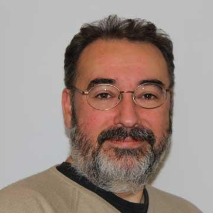
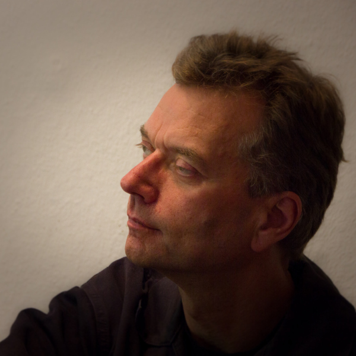
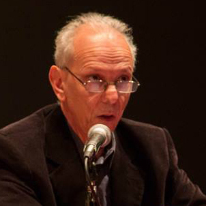
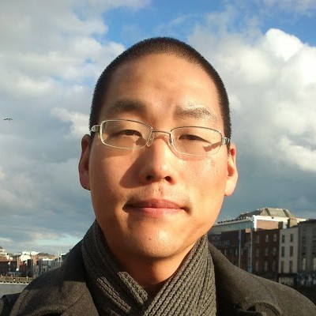

Keynotes
The 60 years leading to Csound 6.09
Victor Lazzarini
Maynooth University, Ireland

- Abstract
- Today’s Csound is but the latest link in an uninterrupted chain of development that stretches back 60 years to 1957, when Max Mathews wrote the first digital synthesis program, MUSIC I. The seeds for what we have today were sown in the early sixties with MUSIC III and IV. The basic shape for Csound was put in place later in the decade with MUSIC 360, followed by MUSIC 11 in the seventies. This talk explores the history of this software, with a close look at the main developments leading to the latest version of Csound.
- Video of the keynote:
- Biography
- Prof. Lazzarini is a graduate of the Universidade Estadual de Campinas (UNICAMP) in Brazil, where he was awarded a BMus in Composition. He completed his doctorate at the University of Nottingham, UK, where he was received the Heyman scholarship for research progress and the Hallward composition prize for one of his works, Magnificat. His interests include musical signal processing and sound synthesis; computer music languages; electroacoustic and instrumental composition.
- Dr Lazzarini received the NUI New Researcher Award in 2002 and the Ireland Canada University Foundation scholarship in 2006. He currently leads the Sound and Digital Music Research Group at the NUIM and has authored over one hundred articles in peer-reviewed publications in his various specialist research areas. He is the author of Aulib, an object-oriented library for audio signal processing, and is one of the project leaders for Csound. Prof. Lazzarini has also forged links with Industry, providing consultancy and research support to Irish companies in the area of computer music.
- In addition to these activities, he is active as a composer of computer and instrumental music, having won the AIC/IMRO International Composition prize in 2006. His music is regularly performed in Ireland and abroad, and has been released on CD by FarPoint Recordings.
- Recent publications include 'Ecologically Grounded Creative Practices in Ubiquitous Music' (Organised Sound, 22, 2017, with D. Keller), Csound: A Sound and Music Computing System (Springer, 2016, with J. ffitch, S. Yi, J. Heintz, O. Brandtsegg, and I. McCurdy), and the forthcoming Computer Music Instruments: Foundations, Design and Applications (Springer, 2017).
Don Quijote, the Island and the Golden Age
Some Experiences and Dimensions of Working "Open Source" and "Free"
Joachim Heintz
Hochschule für Musik, Theater und Medien Hannover, Germany

- Abstract
- I am using Csound since twenty years, being more active in its community since more than ten years. I will talk about different experiences with this collaborative work in this time, and I will try to reflect some of these aspects in a more general context: What is the situation in which we develop a software like Csound? Why do we do it? What are restrictions, where is our freedom?
- Full transcript of the keynote:
- Biography
- Joachim Heintz studied first literature, than composition with korean composer Younghi Pagh-Paan in Bremen, Germany. Since 2004 he is head of the Electronic Studio FMSBW in the Institute for New Music Incontri at Hanover University for Music Drama and Media, responsible for teaching electronic composition. In 2016/17 he was also invited as guest professor to ICEM at Folkwang University of the Arts in Essen. Although in a way specialized in working with electronic media, his compositions are not purely electroacoustic works. He also works for instruments alone, and in particular for instruments with live electronics (e.g. "S‘io non miro non moro" for soprano and electronics 2013, or "Wege" for string quartet and electronics 2017). Except for concerts, he also works for installations and performances (theatre and readings).
- Since 2005 he is part of the Open Source Software movement, in particular the well-known audio programming language Csound. He hosted the first International Csound Conference 2011 in Hanover and founded the Csound FLOSS Manual which is now the standard textbook to learn Csound. He is one of the authors of the new Csound Book in Springer Publishing.
- He held classes in many countries, recently in Tehran (Iran), Montevideo (Uruguay), Buenos Aires (Argentina) and Seoul (Korea). He tries to teach not only programming but to discuss questions of composition and art in general and in the field of electronic music in particular.
- A list of his compositions and texts can be found at www.joachimheintz.de.
The ATS technique in Csound: theoretical background, present state and prospective
Oscar Pablo Di Liscia
Universidad Nacional de Quilmes, Argentina

- Abstract
- The ATS technique (Analysis-Transformation-Synthesis) was developed by the composer and researcher Juan Pampin (DXARTS, UW, USA). Essentially, it represents two aspects of the analyzed signal: the deterministic part and the stochastic part. This model was initially conceived by Julius Orion Smith and Xavier Serra, but ATS refines certain aspects of it, such as the inclusion of psycho-acoustic data. The deterministic part consists of sinusoidal trajectories with varying amplitude, frequency and phase. It is obtained performing high-level analysis on the spectral data obtained using Short-Time Fourier Transform analysis. The stochastic part is also termed residual, because it is achieved by subtracting the deterministic signal from the original signal. Since approximately 2001, several applications were developed by a team of academics from UNQ (Argentina) and UW Seattle (USA). These applications included stand alone programs as well as unit generators for environments like Pure Data, SuperCollider and Csound. The talk will address the theoretical background of the ATS technique, the present state of the opcodes and analysis units developed in Csound, and their future improvements.
- Biography
- Oscar Pablo Di Liscia is a composer and academic born in Santa Rosa (La Pampa, Argentina). Doctor in Humanities and Arts at Universidad Nacional de Rosario. Was Director of the Program in Electronic Composition of Universidad Nacional de Quilmes (UNQ, Argentina) and Research Secretary at Universidad Nacional de las Artes (UNA, Argentina). Presently, he is Professor of Computer Music and Composition in the School of Arts (EUdA) at UNQ and in the Multimedia Arts Department at UNA. He also is Director of the Research Program “Temporal Systems and Spatial Synthesis in Sonic Art” and of the Editorial collection “Music and Science” at UNQ.
- He has published papers and books on aesthetics and techniques of new music and technologies, as well as developed software for Digital Signal Processing, Musical Analysis and Composition. His main areas of research are: Digital Signal Processing (specially Sound Spatialisation and Spectral Analysis of Digital Sound), Electronic Composition and Computer Music. His compositions, both electronic and instrumental were awarded by national and international societies, recorded and edited, and performed in several countries (Argentina, Chile, Uruguay, Cuba, USA, France, Spain, Chile, and Holland).
Csound — the Swiss Army Synthesiser
Iain McCurdy
Maynooth University, Ireland

- Abstract
- In the 1980s and 90s, Csound cut a pioneering path, enabling a wider range of composers and researchers to access the explore computer music techniques established by the Music N family of programs. During these early stages of its existence, Csound sat relatively unchallenged as the serious tool for computer-based sound synthesis. This talk will explore how, within out current burgeoning toolbox of computer music options, Csound has continued to redefine itself, integrate and innovate. The speaker will also describe his own journey with Csound from the late 1990s and his ongoing pursuit to exhaust its possibilities.
- Biography
-
Iain McCurdy is a composer and lecturer originally from Belfast
and currently based at Maynooth University Ireland. He has been
working with, and contributing to, the Csound project since 1999.
His contributions to Csound have included working on the FLOSS
manual project, writing parts of the new Springer Csound Book. He
has also written a catalogue of over 600 interactive examples for
Csound covering many of its capabilities. This resource has
proved valuable for many learning the program. Since 2015 Iain
has also taken on the role of co–editor of the Csound
Journal with Jim Hearon. More recent work has focussed on the
popular Csound front–end, Cabbage.
- Since January 2016 Iain has held the position of Lecturer in Music at the University of Maynooth (National University of Ireland) where his teaching duties cover composition, electronic music, programming and research supervision.
- As a composer his work has covered the areas of acousmatic, electroacoustic, instrumental, sound installation and cross–disciplinary works involving all four. His work with sound installations and alternative controller design has drawn in exploration of electronics, sensors and instrument building.
- More information about Iain is available at his website: www.iainmccurdy.org.
How and Why I Use Csound Today
Steven Yi

- Abstract
- The technology of computers and computer music has changed greatly since I first encountered Csound in 1999. Now, in 2017, 31 years after Csound was first released, I find I enjoy using Csound more than ever. In this talk, I will discuss how and why I use Csound today. I will demonstrate and share ways in which my own personal practice and approach to using Csound has evolved over time. I will then look at ways Csound could evolve and consider how those changes may impact how we see and use Csound in the future.
- Biography
-
Steven Yi is a composer and programer. He is the author of the
Blue music composition environment, author of the Pink and Score
music libraries, and core developer of Csound. He has contributed
work on Csound’s parser and compiler, helped to develop Csound’s
language design, developed opcodes for Csound, and worked on
moving Csound to mobile platforms (Android, iOS) and the web. He
also served as the co-editor of the Csound Journal from
2005–2015, and is co-author of the book Csound. A Sound and Music
Computing System, published by Springer International.
- Steven is a long-time supporter of free and open source software for music. He has presented at the International Computer Music Conference, Linux Audio Conference, and Csound Conferences. In 2016, Steven received his PhD from Maynooth University for his thesis work on “Extensible Computer Music Systems.”
- More information about Steven is available at his website: http://www.kunstmusik.com.